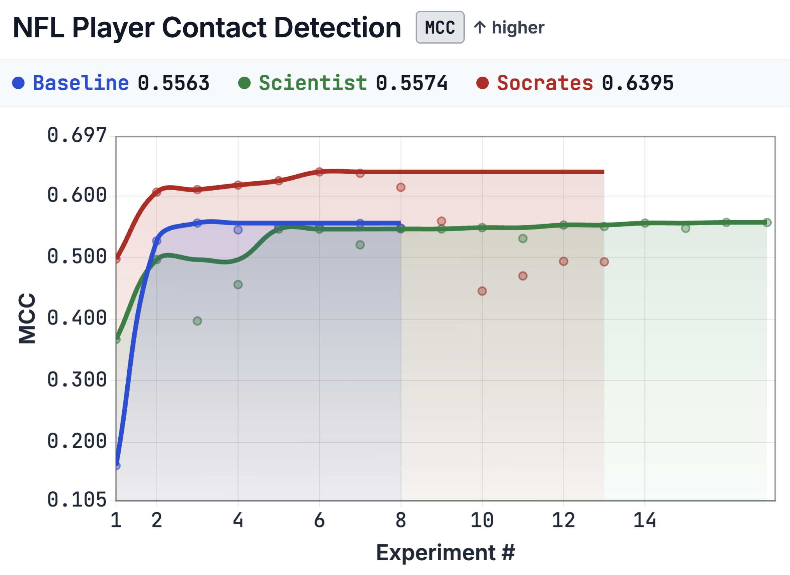
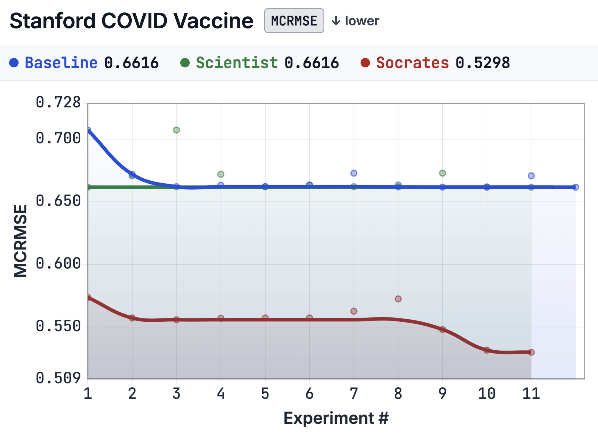
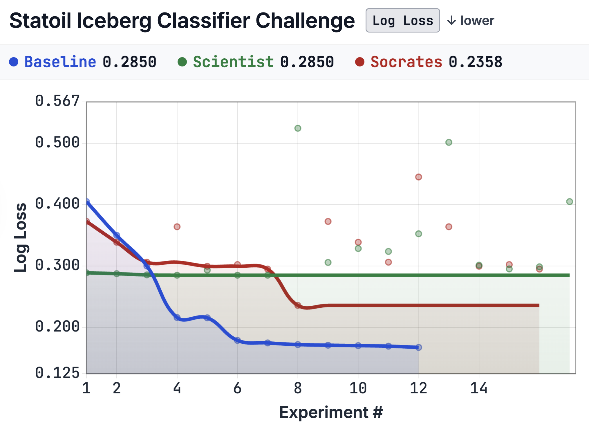
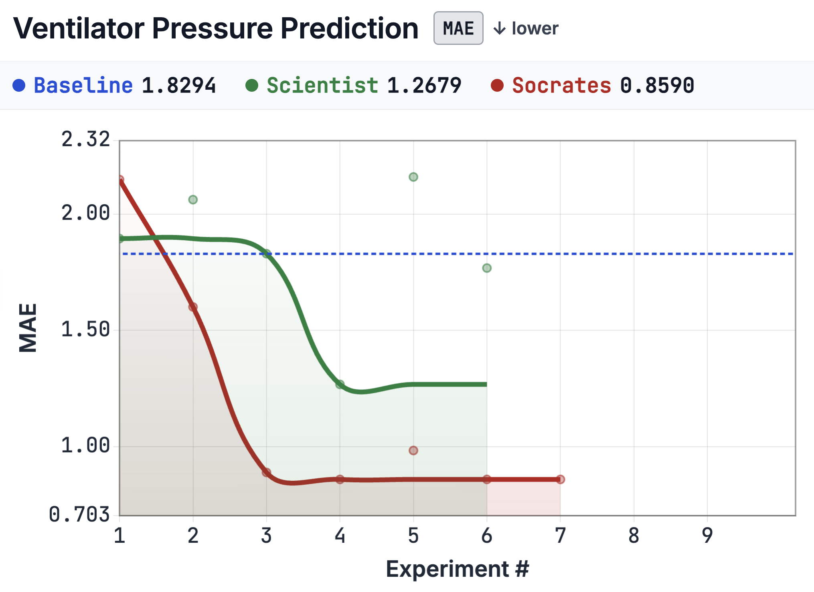
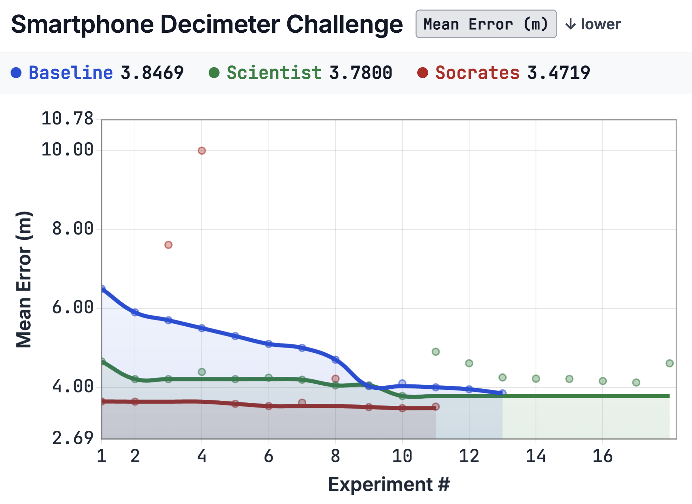

Socrates: Structured Questioning Unlocks Latent Knowledge in AI Research Agents
A multi-agent protocol pairing a tool-using Scientist with a question-only advisor — no tools, no answers, no directives — improves Kaggle test performance on 4 of 5 MLE-bench tasks (mean +55.9%) and outperforms a token-matched generic-encouragement control on 4 of 5. The result isolates knowledge activation, not capacity, as the dominant failure mode of autonomous LLM research agents.
1. Problem: activation, not capacity
Frontier LLMs score >88% on the ML-methodology slice of MMLU; probed directly, they explain stratified k-fold CV, target leakage, distribution shift, and threshold-on-validation correctly. Run the same models as autonomous agents and the picture inverts: the SOTA on MLE-bench is a bronze medal in 16.9% of its 75 Kaggle competitions. On MLGym, frontier models improve baselines through hyperparameter tuning but rarely generate novel hypotheses or algorithms.
Existing remedies are insufficient. Self-Refine and Reflexion-style self-critique fail without external feedback — the same context that produced an error cannot reliably critique it (Kamoi et al., 2024). Multi-agent debate suffers from degeneration-of-thought as agents drawing from the same parametric distribution converge on shared errors (Du et al., 2024; Liang et al., 2024). Manager-worker patterns transfer the manager's blind spots to the worker; the worker is constrained by directives and never retrieves disjoint domain knowledge.
We argue the bottleneck is knowledge activation: relevant parametric knowledge exists in weights but is not surfaced into the working context at decision time. Socrates is the minimal multi-agent mechanism that targets this directly.
2. Protocol

Left: the protocol. Right: Statoil trace — Socrates asks whether the strategy is oriented toward closing the gap; the Scientist admits to avoiding deep learning after a prior GPU error and pivots to domain features (test 0.229, +10.5%). The Baseline PI in the same setup gives generic encouragement; the Scientist adds models without changing features (0.251, +1.6%).
The protocol pairs a tool-using Scientist agent (bash, Python, file I/O) with a question-only Socrates advisor under three hard constraints:
- No answers. Socrates may not state facts, propose solutions, or recommend specific techniques.
- No directives. Socrates may not instruct the Scientist to take any particular action.
- No tools. Socrates has no code execution, no file access, no computational resources. It produces only natural-language questions.
Before each experiment, the Scientist writes a report (hypothesis, methodology, expected outcome). Socrates reviews the report and responds with questions or [APPROVED]. The Scientist may not execute the next experiment until [APPROVED] is emitted. The discussion runs up to K rounds; the Scientist retains tool access during discussion, so a question like "how many features have zero importance?" triggers an empirical investigation before the next experiment is even proposed.
The constraint is the entire design. Because Socrates cannot transfer information, any improvement in Scientist behavior must originate from the Scientist's own parametric knowledge — activated by the question rather than supplied by the advisor. This separates Socrates from manager-worker architectures (where the manager supplies answers and collapses exploration) and from multi-agent debate (where agents exchange substantive arguments and converge on shared parametric errors).
2.1 Asymmetric memory
fresh context] end subgraph Session2 [Session 2] S2[Scientist v2
fresh context] end subgraph Session3 [Session 3] S3[Scientist v3
fresh context] end SOC[Socrates
persistent across
all sessions] FS[(Shared filesystem
code, logs,
best_score.txt)] S1 -- discuss --> SOC S2 -- discuss --> SOC S3 -- discuss --> SOC SOC -. carries history .- S2 SOC -. carries history .- S3 S1 -- write --> FS S2 -- read+write --> FS S3 -- read+write --> FS
The two agents' memory structures are deliberately asymmetric:
- Stateless Scientist. At each session boundary the Scientist's conversational context is discarded. A new instance reads experiment folders, logs, and a
best_score.txtfrom disk. This prevents anchoring effects observed in long-running single-session agents, where accumulated context biases the agent toward incremental refinements of stalled approaches. - Stateful Socrates. The advisor persists across all sessions, accumulating the complete discussion trajectory. It can bridge the memory gap a session-k Scientist would otherwise face: "a previous attempt at pretrained models on this data showed poor domain transfer; what makes your approach different?" embeds the prior fact inside a question without supplying the analysis.
The file system records what happened; Socrates remembers why. This division of labor mirrors how human research groups separate institutional memory from fresh reasoning capacity.
3. Setup
We evaluate on five MLE-bench tasks spanning distinct domains and metric families, chosen so the result is not an artifact of any single problem type:
| Task | Metric | Domain |
|---|---|---|
| Statoil Iceberg | Log Loss ↓ | Radar imagery (small n) |
| Stanford COVID Vaccine | MCRMSE ↓ | RNA degradation |
| Ventilator Pressure | MAE ↓ | Tabular time series |
| NFL Contact Detection | MCC ↑ | Player tracking + video |
| Smartphone Decimeter | Haversine ↓ | GPS positioning |
Three conditions, all using Claude Haiku as the underlying LLM in a Claude Code agent scaffold, all under a 6-hour wall-clock budget yielding 5–16 experiments per run:
- Scientist-only. Single agent, full tools, no supervision.
- Baseline PI. Second agent in the same scaffold, matched in token count and turn structure, producing only generic encouragement ("please continue to iterate and improve"). This is the critical control: it isolates the effect of what the advisor says from the effect of having any second agent at all.
- Socrates. Full protocol — question-only advisor, asymmetric memory,
[APPROVED]gate.
A Socrates-over-Baseline-PI margin therefore measures the nature of the questioning, not the presence of supervision.
4. Results
4.1 Headline
Socrates achieves the best Kaggle test score on 4 of 5 tasks. Mean improvement over Scientist-only: +55.9%. Socrates beats Baseline PI on 4 of 5 tasks.
| Task | Scientist (test) | Baseline PI (test) | Socrates (test) | Δ vs Scientist | Δ vs Baseline PI |
|---|---|---|---|---|---|
| Statoil | 0.255 | 0.251 | 0.229 | +10.5% | +8.9% |
| COVID | 0.389 | 0.308 | 0.294 | +24.4% | +4.7% |
| Ventilator | 1.534 | 0.815 | 0.853 | +44.4% | −4.5% |
| NFL | 0.198 | 0.537 | 0.584 | +195.4% | +8.8% |
| Smartphone | 6.285 | 5.993 | 5.984 | +4.8% | +0.2% |
(Lower is better except NFL.)
4.2 Validation trajectories
The improvement is not only in final score; Socrates converges faster, because each experiment is preceded by an investigation phase that eliminates unpromising directions before code runs.
| NFL Contact | Stanford COVID |
|---|---|
 |
 |
| Reaches near-optimal MCC by experiment 6 and holds. | Begins below baseline; crosses below the plateau by experiment 4. |
| Statoil Iceberg | Ventilator Pressure |
|---|---|
 |
 |
| Scientist-only flatlines at 0.285 after step 4 (12/16 experiments are GBM hyperparameter variants). | Sharp improvement by experiment 4 then stable. |
| Smartphone Decimeter |
|---|
 |
| Infrastructure-dominated task; the margin is smallest here. |
5. Mechanism analysis
A human reviewer read every experiment log and dialogue transcript across all five tasks and three conditions. We identify four recurring mechanisms, plus a generalization-gap pattern, an efficiency advantage, and the one task on which Socrates loses.
5.1 Catching methodological errors
COVID — train/val gap. After experiment 1 the Scientist reported an 80.5% train–val gap and proposed switching to XGBoost. Socrates asked: "is this overfitting, distribution shift, or something else?" In response the Scientist ran feature-importance analysis and found 512 of 963 engineered features had zero importance. The train–val gap fell to 27.6%. Three further questions surfaced (i) data-leakage in feature selection, (ii) 21% importance divergence between RF and GBM (refuting the assumed transferability), and (iii) a target-normalization break that made experiment 8 incomparable. None were caught in the Scientist-only run, which spent 10 experiments on GBM variants after reaching 0.662 at step 1 and never improved.
Ventilator — target leakage. The unprompted Scientist constructed a pressure_lag1 feature directly from the target column. The feature was non-zero at train time and zeroed at inference, inflating validation MAE to 0.008 (14× below the gold-medal threshold) — a value that should have triggered alarm but didn't. The Scientist-only test MAE collapsed to 1.534. Socrates' standard train/test-consistency probes are designed to catch exactly this leakage class.
NFL — threshold leakage. Scientist-only achieved val MCC 0.557 and collapsed to 0.198 on test (a 64.5% degradation). Cause: the classification threshold was tuned directly on the validation set, treating it as an implicit hyperparameter. Socrates exposed this in one question ("who chose the threshold 0.3, and how?") and enforced training-set-only threshold selection. Resulting val MCC 0.639 → test MCC 0.584.
5.2 Forcing diversification
Unprompted agents fixate on a single model family.
| Task | Scientist-only | Socrates |
|---|---|---|
| Statoil | 16 experiments, 12 GBM variants; flatlines at 0.285 after step 4. | 9 experiments across RF, GBM, LR, SVM, KNN, CNN, stacking, blending, feature engineering. |
| NFL | RandomForest across all 9 experiments (MCC 0.547). | GBM + threshold optimization + multi-seed ensembles; monotonic improvement over 6 consecutive steps to MCC 0.639. |
| COVID | Best at step 1 (0.662); 10 wasted experiments tweaking GBM. | RF, XGBoost, NN, ensemble stacking, multi-target regression. |
Socrates never recommended an architecture. It asked why the current one should work; the Scientist retrieved its own counter-evidence.
5.3 Empirical investigation during review
The Scientist retains tool access during the discussion phase. When Socrates asks "how many features have zero importance?" the Scientist runs the analysis right then. When Socrates asks "what is your training MCRMSE?" the Scientist computes it. Discoveries thus happen during review, not before it. Each experiment is preceded by a mini-investigation that eliminates unpromising directions and surfaces task-specific knowledge. Rhetorical questions in a text-only review become actionable when the Scientist has tools — and this is why Socrates achieves better scores with fewer experiments (9 vs. 16 on Statoil, +10.5% better test result).
5.4 Approach evolution
The advisor never suggests an approach; the direction of change is data-driven.
| Task | Direction | Feature count | Result |
|---|---|---|---|
| NFL | Expansion | 10 → 18 (lag + cross-player deltas) | MCC 0.198 → 0.584 (+195.4%) |
| Ventilator | Contraction | 29 → 15 (noise ablated) | MAE 1.534 → 0.853 (+44.4%) |
| COVID | Regularization | 963 → ~250 (importance-filtered)+RobustScaler+target normalization | MCRMSE 0.389 → 0.294 (+24.4%) |
Same advisor, opposite directions. The pattern: methodology questions surface implicit assumptions about feature relevance, model complexity, and validation integrity; the Scientist retrieves the relevant domain knowledge it already possesses.
5.5 Generalization gap
Validation–test consistency separates the three conditions:
- Scientist-only overfits its own validation splits: Statoil val 0.167 (best) / test 0.255 (worst); NFL val 0.557 / test 0.198 (collapse).
- Socrates does the opposite: Statoil val 0.236 (worst) / test 0.229 (best); NFL val 0.639 / test 0.584 (held).
- Baseline PI sits between — enough oversight to avoid the worst collapses, but not enough to expose the threshold-on-validation error that drives NFL's gap.
5.6 Efficiency
Socrates matches or beats both baselines with comparable or fewer experiments across the four tasks where it leads. Discussion-phase tokens are spent on eliminating unpromising directions, not on hyperparameter sweeps that yield negligible gains.
5.7 When Socrates loses (Ventilator)
On Ventilator, Baseline PI (0.815 MAE) edges out Socrates (0.853). The Ventilator search space rewards aggressive feature-interaction sweeps with fast iteration; Socrates' structured-review overhead consumes turns that Baseline PI instead spends on additional model variants. The protocol helps most where methodological rigor — not iteration volume — is the bottleneck.
5.8 Variance
LLM agents are run-to-run high-variance. A 10-seed Scientist-only sweep on Smartphone gave mean 4.07, SD 0.63 (15.5% of mean). Socrates achieved 3.47, below mean − 1 SD (3.44). Single-seed gains are unlikely to be seed noise alone, though they will fluctuate; the reproducible claim is the direction of the effect (Socrates ≥ Baseline PI > Scientist-only on test scores).
6. Discussion
The signature failure mode of autonomous LLM agents is not "the model doesn't know the right thing." It is "the model knows the right thing but does not surface it into the context where decisions are made." Self-critique fails because the same context produced both the work and the critique. Debate fails because all agents share the same parametric distribution. Scaling test-time compute alone does not address the activation problem because the work and the critique still come from the same model.
A structured questioning loop with a deliberately limited advisor — one that can only ask, never tell — is sufficient to bridge that gap on a meaningful fraction of tasks. The advisor is cheap (no tools, no compute, just text generation), the protocol is simple (drops into existing agent scaffolds), and the empirical effect is large (+55.9% mean on these five tasks, +195.4% on the best). The bottleneck for autonomous research agents is knowledge activation, not knowledge availability; Socrates is the minimal mechanism that demonstrates this and provides one fix.
7. Open questions
- Scaling. Does the activation effect attenuate with stronger underlying models? Prior: it shrinks but does not vanish — even frontier models leave parametric knowledge unsurfaced during autonomous operation.
- Full MLE-bench. Five tasks is a starting point; the full 75-task benchmark is the natural next step.
- Adversarial advisors. What does a deliberately misleading or naive question-only advisor produce? Hypothesis: less harm than expected, because the Scientist still owns the conclusion.
- Non-ML domains. The Socratic constraint is general. Code review, scientific writing, engineering design — anywhere an agent has latent domain knowledge that is not retrieved during autonomous operation.
Code and data
- Code: github.com/hexo-ai/socrates (MIT-licensed; both scaffolds, all prompts, all configs).
- Data: Public Kaggle competitions distributed through MLE-bench.
- Paper: Vrabac et al., Socrates: Structured Questioning Unlocks Latent Knowledge in AI Research Agents, COLM 2026.
Authors: Damir Vrabac, Prannay Hebbar, Yogendra Manawat, Selvam Palanimalai, Samuel Verboomen, Gurusha Juneja (UC Santa Barbara), Kunal Bhatia, Vignesh Baskaran. Hexo.ai.